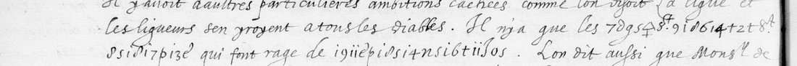
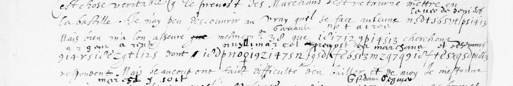

At a glanceKey from adjacent plaintext · complete
- The letter
- A court informant’s letter, 6 June 1588, describing Paris three weeks after the Day of the Barricades; DECODE gave sender and recipient as unknown.
- Where
- BnF français 3976 (Nevers’s papers for 1588), ff. 133r–134r; DECODE R3708.
- The cipher
- The same cipher and monogram as the informant’s letters of f. 62 and f. 131: signs, polyphonic values, and bare code numbers.
- How it was read
- The key came from the interlinear decipherment of his 4 June letter (f. 131). It decrypted most runs directly and was extended by three signs (y, z, n).
- What it says
- The curés stir the people, the new prévôt La Chapelle reports to Guise’s council, and the échevin Cotteblanche refuses to let Guise take the Arsenal guns to Corbeil.
- Still open
- 4 of 230 signs are supplied from context. Eight code numbers stay unidentified. The f. 139 letter (9 June) is not on DECODE.
01 The document
Fr. 3976 is a volume of Nevers’s papers for 1588, on Gallica as btv1b9060548h. F. 133r is view 223, f. 133v view 224 and f. 134r view 225. The letter is dated at the head 6 de Juin 1588 and at the foot Ce 6. Juing a 10 heures du soir, and it closes with the cipher monogram of ff. 62 and 131. The cipher runs are set into the clear sentences, as on f. 62. The writer uses bare code numbers as well: 4, 9, 10, 11, 12, 23, 24, 25, 33, 79, 94, 102, 104, 105 and 106. Two of them, 9 and 106, stand inside a run and are underlined, like the code numbers in the clear text.

7δg5ꝗ St 9 1d 6 14 + 2t St 8 s 1d 17 p 13 ε = curez St André et St Benoist, qui font rage de 19 11 ε p 1d s 14 n s 16 t 11 δ o s = mutiner le peuple. Image: Bibliothèque nationale de France, fr. 3976 f. 133v, via Gallica (btv1b9060548h, view 224).02 The key
A sign is one character, or the figure 1 (written like a dotted i) followed by a character. Several signs are polyphonic (they stand for more than one letter). The key table from f. 62 (write-up, targets/nevers1588/key.md) was applied unchanged. This letter confirmed it and added three values.
- The y with a cross below (ϙ) is y: Montmorency, artillerye.
- The 4 with a cross below is z: curez, faulx bruictz, and Pichenaz for Pigenat. The f. 62 table had it as q.
- A bracket-shaped sign, and a long J-shaped sign, are n: nommé, conseil, Nevers en court, Nuilly. The J-shaped sign is p in prevost.
- z is a in Arsenac and Pichenat. 9 is r in artillerye and h in Pichenat and Cotteblanche. o is u once, in bruictz.
The code numbers are identified from the context here and on ff. 62 and 131:
| code | reading | evidence |
|---|---|---|
| 11 | le Roy | glossed on f. 131; “des deputez vers 11” |
| 24 | the duc de Nevers | glossed nevers on f. 131; “24 se peult souvenir qu’estant a La Cassine” |
| 102 | Paris | “102 renvoye des deputez vers 11” |
| 9 | the duc de Guise | glossed guise on f. 131 (read 2 October 2026); “9 voullant faire sortir l’artillerye de l’Arsenac pour aller a Corbeil” |
| 12 | Catherine de Médicis | “chez 12 elle a resolu d’envoyer 79 vers 24” |
| 104 | a woman of the Nevers household, probably the duchess | “l’ont supplié de les accompaigner d’un mot de lettre, ce qu’elle a faict” |
| 10 | the duc d’Épernon | glossed Espernon on f. 139; “la survenue de 10 qui est maintenant absent” |
| 38 | Garrault | glossed on f. 139 |
| 98 | la paix | glossed on f. 139: “par ce moyen l’on aura 98” |
| 107 | the Grand Écuyer | glossed on f. 139: “107 s’insinue es bonnes graces de 9” |
| 4, 23, 25, 33, 79, 94, 105, 106 | not identified | 4, 9, 24 and 94 are the names Paris offers the King “a son choix” |
The gloss over 24 on f. 131 was recorded as “Navarre” when f. 62 was deciphered. Looked at again, it says nevers, and Nevers fits every use of 24 here. The Nevers notes have been corrected.
03 The decipherment
The clear text is given in modern word division. The cipher runs are in bold, and cuts are marked […].
n 9 7 2 13 f p 1d t = La Cassine, Nevers’s château in the Rethelois, 11 ne luy escripvoit qu’a force. Image: Bibliothèque nationale de France, fr. 3976 f. 133r, via Gallica (btv1b9060548h, view 223).Je suis tres marry qu’aiez pris en mauvaise part ce qui a esté escript a 24 […] Mais parce qu’avant son partement il offroit a 11 de demourer s’il en estoit de besoing, on estimoit qu’il se portast encore mieulx qu’alors, et par consequent sans peril de sa personne il pouvoit s’approcher de Roy. Or nous avions bien consideré que si Nevers alloit veoir 11 sans estre mandé d’affection, il y pourroit recevoir quelque pire traictement […] Secondement, 24 se peult souvenir qu’estant a La Cassine 11 ne luy escripvoit qu’a force, et neantmoings apres qu’il fut venu il luy fit caresse et honneurs […] Tiercement, tout le monde desire Nevers en court beaucoup plus que l’on ne faisoit alors. Et non seulement ligueurs mais aussi les aultres […] Jusque la qu’il commence ja a courir ung bruit que 102 renvoye des deputez vers 11, avec charge entre aultres choses de le supplier que pour tesmoigner a 102 qu’il pardonne et n’a mauvaise volonté, il luy laisse pour 94 ou 4 ou 9 ou 24 a son choix. Ledit 102 n’a encore envoyé vers Nevers […]
Il n’y a que les curez St André et St Benoist qui font rage de mutiner le peuple. […] Quant a l’eslection des prevost des marchans et eschevins, elle n’a esté aultrement faicte que je vous l’ay mandé, que j’avois entendue de Pichenat. […] Mais comme vous scavez, ce ne sont gens d’estat, de sorte que par ruses et faulx bruictz on leur faict tousjours passer quelque carriere, car si tost que quelque chose a esté resolu en l’hostel de ville, le prevost Chapelle ne fault de rapporter le tout au conseil de 9 et 106 pour adviser les moyens de rompre les deliberations qui ne leur plaisent, ou assistent tousjours 33 et de Bray, l’evesque de Lion, Nuilly. L’on m’a asseuré neantmoings que ces jours passez 9, voullant faire sortir l’artillerye de l’Arsenac pour aller a Corbeil, l’un des eschevins, nommé Cotteblanche, dist qu’il ne consentiroit jamais que cela se feist sans permission du Roy.
[f. 134] Quant a 33, j’ay perdu tout ung jour pour cuyder le veoir, mais il fut toute l’apresdisnée chez 105, qui est logé au logis de Montmorency.
Translation of the runs’ sense. Nevers was being urged to come to court, where everyone wanted him, the ligueurs included. Paris talked of asking the King, as a sign that he pardoned the city, to let it choose among four names. Only the curés of Saint-André (Christophe Aubry) and Saint-Benoît (Jean Boucher) were still inciting the people. The new municipality was steered by rumour, and La Chapelle-Marteau reported everything decided at the Hôtel de Ville to Guise’s council. With 33, “de Bray”, Pierre d’Épinac archbishop of Lyon and the président de Neuilly in attendance, that council undid whatever it disliked. When Guise wanted the Arsenal’s artillery for Corbeil, the échevin Cotteblanche refused without the King’s permission.

04 The letter of 9 June (f. 139)
Three days later the informant wrote again: BnF fr. 3976 f. 139, piece 74 of the BnF notice, “Lettre chiffrée avec déchiffrement contenant des nouvelles de Paris. Ce 9 juing 1588”. It is not on DECODE. The letter is one page with six cipher runs and code numbers, in the same hand and with the same monogram. Here a contemporary decipherer wrote the plaintext over every run and over most of the numbers. The key built from ff. 62 and 131 was applied to the six runs before the glosses were compared. It decrypts all 106 signs, and each decryption matches the gloss.

n s d t 5 6 5 v t l p s 14 13 glossed leuee de deniers; 38 glossed Garrault; 1d 17 12 9 p 14 5 13 notaires; 9 14 r s 1d ε z g t l 12 s argent a rente; and the long run glossed Nuylli Marcel prevost des marchans et eschevins. Image: Bibliothèque nationale de France, fr. 3976 f. 139, via Gallica (btv1b9060548h, view 234).C’est chose veritable que le prevost des Marchans s’est retourné mettre en la Bastille. Je n’ay peu descouvrir au vray qu’il se face aucune levee de deniers. Mais bien m’a l’on asseuré, mesmement 38 [Garrault], que notaires cherchent argent a rente, dont Nilly, Marcel, prevost des marchans et eschevins respondent. Mais beaucoup ont faict difficulté d’en bailler, et de moy je m’estonne que Marcel y soit meslé. On dit que 107 [le Grand Escuyer] s’insinue es bonnes graces de 9 [Guise] et en presse. Son frere a aussi quitté 10 [Espernon]. […] L’on tient pour certain que 11 [le Roy] accorde a 9 la lieutenance generalle, et que par ce moyen l’on aura 98 [la paix]. 38 a plusieurs advis a donner a 24 [Nevers] quand il sera pres de 11 […] Ce 9 Juing.
The League municipality was raising loans through the notaries on the guarantee of Neuilly, Claude Marcel, the prévôt and the échevins. The rumour that Henri III would make Guise lieutenant-general came true with the Edict of Union in July. The glosses also settle two things for the other letters. 24 is Nevers, the value the f. 131 gloss gives when examined again. 10 is Épernon, which makes sense of “la ruyne de 10” on f. 62 and “la survenue de 10 qui est maintenant absent” on f. 133.
05 Method
The pages were cut into overlapping bands from the full-resolution Gallica images (4895 × 6460 px), and the eighteen runs were transcribed sign by sign (targets/r3708/ciphertext.txt). Most runs decrypted with the f. 62 key as it stood. The run after de sorte que did not: as first transcribed, its second half matched none of the 133,000 French word forms in the project’s corpora. A second pass at native resolution corrected the transcription to 16 9 14 9 δ 13 5 f 5 12 J z δ n c δ g o p 7 ε ꝗ = par ruses et faulx bruictz. The tail of the run after tousjours 33 was corrected the same way: J δ 1o n ϙ is Nuilly, the spelling the writer uses in clear on f. 133r (le president de Nuilly).
06 What remains uncertain
- curez St André et St Benoist: the sign + (e in André) and the pair
2 t(et) occur only here. Supplied from context, grade C. - Nuilly: the sign
1o(i) occurs only here. Grade H for the name, which is spelled the same way in clear on the same page. - de Bray: the letters are decrypted (the curly 8 is b, u or v), but the person is not identified. de vray (“indeed”) is possible, grade M.
- Pichenat: the last sign is z (Pichenaz). The curé of Saint-Nicolas-des-Champs, François Pigenat, is meant. Grade H.
- Code numbers 4, 23, 25, 33, 79, 94, 105 and 106 are not identified. 79 is the Queen Mother’s messenger to Nevers; the gloss over it on f. 139 is illegible. 105 lodged at the Hôtel de Montmorency. 33 attended Guise’s council and “faict semblant d’estre du tout sien” toward 4, who “n’ouvre encore ses yeulx”. The informant’s list of numbers has not been found.
- Who the letter is to. “Vous” took offence at what was written to 24, so the recipient is someone close to Nevers rather than the duke himself.
Full texts
The transcription and the decryption of every document on this page, so that the reading can be used and checked. Short files are shown here; all are in the repository.
Paris informant, 6 June 1588, BnF fr. 3976 ff. 133-134 (DECODE R3708)
Paris three weeks after the Barricades: the informant explains why Nevers should not go to the King unsummoned, reports that everyone wants Nevers at court and that Paris is sending deputies to the King; the curés of St André and St Benoît stir up the people, and the new League municipality under the prévôt La Chapelle is steered by Guise's council, while the échevin Cotteblanche refused to let the Arsenal's artillery go to Corbeil without the King's leave.
Transcription
# BnF fr. 3976 ff. 133-134 (DECODE R3708), Paris informant to Nevers, 6 June 1588 # Gallica btv1b9060548h canvases 223 (f.133r), 224 (f.133v), 225 (f.134r). # One run per line: id <TAB> signs separated by spaces. A sign is one character or "1"+character. # Glyph names: d = curly 8 / delta-like d, [ = the bracket-like n-sign, J = the long j/f-like sign, # Q = y with a cross below, Z = 4 with a cross below, E = epsilon-like t, + = plus-like sign. # Underlined code numbers inside runs are written <9>, <106>, <33>. R01 14 17 Q R02 1d s 11 t 14 13 R03 n 9 7 2 13 f p 1d t R04 [ s d t 9 f s 1d x 17 d 14 12 R05 n p r 11 t d 14 13 R06 16 9 14 6 17 1d l s R07 1d s 11 t 14 13 R08 7 d g 5 Z S^t 9 1d 6 14 + 2 t S^t 8 s 1d 17 p 13 E R09 19 11 E p 1d s 14 n s 16 t 11 d o s R10 16 p 7 9 s 1d z Z R11 16 9 14 9 d 13 5 f 5 12 J z d n c d g o p 7 E Z R12 o s J g s d 17 13 E x q 2 1b t n o s R13 7 k [ 13 s p n 6 s <9> t E <106> R14 <33> t 12 6 s 8 14 9 Q n s d t f 1s t 6 s n p k 1d J d 1o n Q R15 9 14 12 p n o s 9 Q t 6 s o z 14 13 s 1d z 7 R16 x k 14 y s p n R17 [ k 19 m t x 17 12 E t 8 o 9 [ 7 9 s v p 13 12 R18 19 k 1d 12 m 17 g 5 [ 7 Q
Decryption
R01 14 17 Q roy il pouvoit s'approcher de [Roy] R02 1d s 11 t 14 13 nevers si [Nevers] alloit veoir 11 sans estre mandé R03 n 9 7 2 13 f p 1d t lacassine 24 se peult souvenir qu'estant a [La Cassine] 11 ne luy escripvoit qu'a force R04 [ s d t 9 f s 1d x 17 d 14 12 neversencourt tout le monde desire [Nevers en court] beaucoup plus que l'on ne faisoit alors R05 n p r 11 t d 14 13 ligueurs Et non seulement [ligueurs] mais aussi les aultres R06 16 9 14 6 17 1d l s pardonne pour tesmoigner a 102 qu'il [pardonne] et n'a mauvaise volonté R07 1d s 11 t 14 13 nevers Ledit 102 n'a encore envoyé vers [Nevers] R08 7 d g 5 Z 9 1d 6 14 + 2 t 8 s 1d 17 p 13 E curezandreetbenoist Il n'y a que les [curez St André et St Benoist]; + (=e) and 2t (=et) from context only R09 19 11 E p 1d s 14 n s 16 t 11 d o s mutinerlepeuple qui font rage de [mutiner le peuple] R10 16 p 7 9 s 1d z Z pichenaz que j'avois entendue de [Pichenat] (last sign reads z: 'Pichenaz') R11 16 9 14 9 d 13 5 f 5 12 J z d n c d g o p 7 E Z parrusesetfaulxbruictz de sorte que [par ruses et faulx bruictz] on leur faict tousjours passer quelque carriere R12 o s J g s d 17 13 E x q 2 1b t n o s leprevostchapelle [le prevost Chapelle] ne fault de rapporter le tout au R13 7 k [ 13 s p n 6 s t E conseildeet au [conseil de 9 et 106] pour adviser les moyens de rompre les deliberations R14 t 12 6 s 8 14 9 Q n s d t f 1s t 6 s n p k 1d J d 1o n Q etdebraylevesqedelionnuily assistent tousjours [33 et de Bray, l'evesque de Lion, Nuilly]; 1o (=i) once only R15 9 14 12 p n o s 9 Q t 6 s o z 14 13 s 1d z 7 artillerye delarsenac 9 voullant faire sortir [l'artillerye de l'Arsenac] pour aller a R16 x k 14 y s p n corbeil pour aller a [Corbeil] R17 [ k 19 m t x 17 12 E t 8 o 9 [ 7 9 s v p 13 12 nommecotteblanchedist l'un des eschevins [nommé Cotteblanche dist] qu'il ne consentiroit jamais R18 19 k 1d 12 m 17 g 5 [ 7 Q montmorency chez 105 qui est logé au logis de [Montmorency]
Decryption
# Copied verbatim from NOTES.md, section 'Reading' (22 Oct 2026): the ff. 133-134 cipher runs (bold) in their clear context, with the code-number table. Run-by-run decode: reading.tsv.
## Reading
The runs in their clear context (`reading.tsv`, cipher in bold):
> Je suis tres marry qu'aiez pris en mauvaise part ce qui a esté escript a 24 [...] Mais parce qu'avant son
> partement il offroit a 11 de demourer s'il en estoit de besoing, on estimoit qu'il se portast encore mieulx qu'alors
> et par consequent sans peril de sa personne il pouvoit s'approcher de **Roy**. Or nous avions bien consideré que si
> **Nevers** alloit veoir 11 sans estre mandé d'affection, il y pourroit recevoir quelque pire traictement [...]
> Secondement, 24 se peult souvenir qu'estant a **La Cassine** 11 ne luy escripvoit qu'a force, et neantmoings apres
> qu'il fut venu il luy fit caresse et honneurs [...] Tiercement tout le monde desire **Nevers en court** beaucoup plus
> que l'on ne faisoit alors. Et non seulement **ligueurs** mais aussi les aultres [...] un bruit que 102 renvoye des
> deputez vers 11 avec charge [...] de le supplier que pour tesmoigner a 102 qu'il **pardonne** et n'a mauvaise
> volonté, il luy laisse pour 94 ou 4 ou 9 ou 24 a son choix. Ledit 102 n'a encore envoyé vers **Nevers** [...]
> Il n'y a que les **curez St André et St Benoist** qui font rage de **mutiner le peuple**. [...] Quant a l'eslection
> des prevost des marchans et eschevins, elle n'a esté aultrement faicte que je vous l'ay mandé, que j'avois entendue
> de **Pichenat**. [...] Mais comme vous scavez, ce ne sont gens d'estat, de sorte que **par ruses et faulx bruictz**
> on leur faict tousjours passer quelque carriere, car si tost que quelque chose a esté resolu en l'hostel de ville,
> **le prevost Chapelle** ne fault de rapporter le tout au **conseil de 9 et 106** pour adviser les moyens de rompre
> les deliberations qui ne leur plaisent, ou assistent tousjours **33 et de Bray, l'evesque de Lion, Nuilly**. L'on
> m'a asseuré neantmoings que ces jours passez 9 voullant faire sortir **l'artillerye de l'Arsenac** pour aller a
> **Corbeil**, l'un des eschevins, **nommé Cotteblanche, dist** qu'il ne consentiroit jamais que cela se feist sans
> permission du Roy.
> Quant a 33, j'ay perdu tout ung jour pour cuyder le veoir, mais il fut toute l'apresdisnée chez 105, qui est logé
> au logis de **Montmorency**.
This is Paris three weeks after the Barricades (12 May 1588): the new League municipality (La Chapelle-Marteau
prévôt, Cotteblanche among the new échevins) steered by Guise's council, the preachers Aubry (St André des Arts) and
Boucher (St Benoît), Pigenat (St Nicolas des Champs), Pierre d'Épinac archbishop of Lyon and the président de
Neuilly; Guise's siege of Corbeil (the town was held against the League in June 1588; f. 131 reports it surrounded
by Guise's troops) and Cotteblanche refusing the Arsenal's guns without the King's leave.
Code numbers, from context here and on ff. 62 and 131:
| code | reading | evidence |
|---|---|---|
| 11 | le Roy | glossed f. 131; "deputez vers 11", "sans permission du Roy" |
| 24 | the duc de Nevers | glossed "nevers" on f. 131 (read as "Navarre" in `nevers1588`, corrected); "24 ... estant a La Cassine" |
| 102 | Paris | "102 renvoye des deputez vers 11" |
| 9 | the duc de Guise | "9 voullant faire sortir l'artillerye ... pour aller a Corbeil"; conseil de 9 |
| 12 | Catherine de Médicis | "chez 12 elle a resolu d'envoyer 79 vers 24" |
| 104 | a woman of the Nevers household, probably the duchesse de Nevers | "ce qu'elle a faict", "104 ... ne se deliberoit de partir ce jourd'huy du logis" |
| 10 | the duc d'Épernon | glossed "Espernon" on f. 139; fits f. 62 "a la ruyne de 10" and f. 133 "la survenue de 10 qui est maintenant absent" |
| 38 | Garrault | glossed on f. 139 ("mesmement 38", "Led. 38 ne bougera") |
| 98 | la paix | glossed on f. 139 ("par ce moyen l'on aura 98") |
| 107 | the Grand Écuyer (Bellegarde) | glossed "Grand Escuyer" on f. 139 ("107 s'insinue es bonnes graces de 9") |
| 79 | a messenger of the Queen Mother to Nevers | f. 133 "envoyer 79 vers 24"; f. 139 "79 vous l'aura peu dire ... quand il partit"; the gloss is not legible (Mo...ers?) |
| 4, 23, 25, 33, 94, 105, 106 | not identified | 4, 9, 24, 94 are candidates Paris offers the King "a son choix" (a governor?) |
Who the letter goes to is open: "vous" is someone who took offence at what was written to 24, so a person close to
Nevers rather than the duke himself.Translation
<!-- English translation of texts/f133_reading.md (Claude Opus 5.5, 23 Oct 2026): the cipher runs of BnF fr. 3976 ff. 133-134 (bold) in their clear context, as quoted there from NOTES.md; [...] = clear text left out of the quotation (an excerpt, not unread cipher). Code numbers kept; their identifications are in the table of f133_reading.md (11 the King, 24 Nevers, 102 Paris, 9 Guise). --> # BnF fr. 3976 ff. 133-134, letter from Paris, June 1588: the cipher runs in their clear context, English translation > I am very sorry that you took in bad part what was written to 24 [...] But because before his departure he offered > 11 to stay if there were need, it was thought that he was even better than then, and consequently, without danger to > his person, he could approach the **King**. Now we had well considered that if **Nevers** went to see 11 without > being summoned out of affection, he might receive some worse treatment there [...] Secondly, 24 may remember that, > when he was at **La Cassine**, 11 wrote to him only under compulsion, and nevertheless after he had come he > welcomed him and did him honours [...] Thirdly, everyone wants **Nevers at court** much more than they did then. And > not only the **Leaguers** but also the others [...] a rumour that 102 is sending deputies back to 11 charged [...] to > beg him that, to show 102 that he **pardons** and bears no ill will, he leave him for 94 or 4 or 9 or 24, at his > choice. The said 102 has not yet sent to **Nevers** [...] > It is only the **curés of St André and St Benoît** who rage to **stir up the people to mutiny**. [...] As for the > election of the prévôt des marchands and the échevins, it was made no otherwise than I sent you word, which I had > heard from **Pichenat**. [...] But, as you know, they are not men of state, so that **by tricks and false rumours** > they are always made to run some course; for as soon as something has been resolved at the Hôtel de Ville, **the > prévôt Chapelle** never fails to report the whole to the **council of 9 and 106**, to consider the means of breaking > the deliberations that do not please them, at which **33 and de Bray, the bishop of Lyon, Nuilly** always attend. I > have been assured nevertheless that in these past days, 9 wishing to take **the artillery out of the Arsenal** to go > to **Corbeil**, one of the échevins, **named Cotteblanche, said** that he would never consent to its being done > without the King's permission. > As for 33, I lost a whole day trying to see him, but he was all afternoon at the house of 105, who is lodged in the > **Montmorency** house.
Paris informant, 9 June 1588, BnF fr. 3976 f. 139
The prévôt des marchands has returned to the Bastille; notaries seek money at interest guaranteed by Neuilly, Marcel, the prévôt and échevins; the Grand Écuyer courts Guise; it is held certain that the King will grant Guise the lieutenance générale and so there will be peace. Every run carries a contemporary gloss, and all agree with the key.
Transcription
# BnF fr. 3976 f. 139 (not on DECODE), the same Paris informant, 9 June 1588. Gallica btv1b9060548h view 234. # Same conventions as ciphertext.txt. Every run carries a contemporary interlinear gloss (last column of reading_f139.tsv). F01 n s d t 5 6 5 v t l p s 14 13 F02 1d 17 12 9 p 14 5 13 F03 9 14 r s 1d E z g t l 12 s F04 1d p n o Q 19 z 14 7 s n J g s d k f E 6 s 13 m z 9 7 9 9 1d f t E s x q s d p 1d 13 F05 19 z 14 x s n Q f 17 p 12 F06 n 9 o p s d E s 1d z 1d 7 5 3 t [ t 14 z n o s
Decryption
F01 n s d t 5 6 5 v t l p s 14 13 leveededeniers Je n'ay peu descouvrir au vray qu'il se face aucune [levee de deniers] gloss: leuee de deniers F02 1d 17 12 9 p 14 5 13 notaires mesmement 38 que [notaires] cherchent gloss: notaires F03 9 14 r s 1d E z g t l 12 s argentarente cherchent [argent a rente] dont gloss: argent a rente F04 1d p n o Q 19 z 14 7 s n J g s d k f E 6 s 13 m z 9 7 9 9 1d f t E s x q s d p 1d 13 nillymarcelprevostdesmarchansetechevins dont [Nilly, Marcel, prevost des marchans et eschevins] respondent gloss: nuylli marcel prevost des marchans et eschevins F05 19 z 14 x s n Q f 17 p 12 marcelysoit je m'estonne que [Marcel y soit] meslé gloss: marcel y soit F06 n 9 o p s d E s 1d z 1d 7 5 3 t [ t 14 z n o s lalieutenancegeneralle l'on tient pour certain que 11 accorde a 9 [la lieutenance generalle] gloss: la lieutenance g[ener]alle
Decryption
# Copied verbatim from NOTES.md, section 'f. 139: the letter of 9 June 1588' (22 Oct 2026): the cipher runs (bold) in their clear context. Run-by-run decode with the contemporary gloss: reading_f139.tsv.
## f. 139: the letter of 9 June 1588
* BnF fr. 3976 f. 139, piece 74 of the BnF notice ("Lettre chiffrée avec déchiffrement contenant des nouvelles de
Paris. Ce 9 juing 1588"), Gallica view 234 (f. 139v blank, view 235). Not a DECODE record. Same hand and monogram.
* One page, six cipher runs and code numbers 9, 10, 11, 24, 38 (three times), 79, 98, 107. A contemporary hand wrote
the plaintext over every run and over most code numbers.
* The key read all 106 signs as it stands (`python targets/r3708/decode.py f139`), and each reading matches the gloss. This is
an independent check on the key: the glosses were not used to build it.
> C'est chose veritable que le prevost des Marchans s'est retourné mettre en la Bastille. Je n'ay peu descouvrir au
> vray qu'il se face aucune **levee de deniers**. Mais bien m'a l'on asseuré, mesmement 38 [Garrault], que
> **notaires** cherchent **argent a rente**, dont **Nilly, Marcel, prevost des marchans et eschevins** respondent.
> Mais beaucoup ont faict difficulté d'en bailler, et de moy je m'estonne que **Marcel y soit** meslé. On dit que
> 107 [le Grand Escuyer] s'insinue es bonnes graces de 9 [Guise] et en presse. Son frere a aussi quitté 10
> [Espernon]. Sans la haste que j'ay je vous eusse faict ung petit discours succinct de ce qui fut dit en l'assemblée
> de ville des cappitaines dont je vous ay cy devant escript, encore que j'estime que 79 vous l'aura peu dire
> amplement, car cela se scavoit desja quand il partit. L'on tient pour certain que 11 [le Roy] accorde a 9 **la
> lieutenance generalle**, et que par ce moyen l'on aura 98 [la paix]. 38 a plusieurs advis a donner a 24 [Nevers]
> quand il sera pres de 11, tant pour le general que pour son particulier, dont il ne l'advertit maintenant a cause
> que cela seroit inutille estant absent. Ce 9 Juing. [monogram]
> J'ay encloz ung pacquet pour Monsr de Lorme, medecin. Led. 38 ne bougera.
The Bastille, the League's forced loans guaranteed by the new municipality (Neuilly, Claude Marcel, the prévôt and
échevins), and the rumour that Henri III would make Guise lieutenant-general (done by the Edict of Union, July 1588).Translation
<!-- English translation of the letter text in texts/f139_reading.md (Claude Opus 5.5, 23 Oct 2026): BnF fr. 3976 f. 139, 9 June 1588, the cipher runs (bold) in their clear context; the code numbers with the contemporary gloss in [ ], as there. --> # BnF fr. 3976 f. 139, letter from Paris, 9 June 1588: English translation > It is a true thing that the prévôt des marchands has gone back to put himself in the Bastille. I have not been able > to discover truly that any **levy of money** is being made. But I have certainly been assured, notably by 38 > [Garrault], that **notaries** are seeking **money at interest**, for which **Nilly, Marcel, the prévôt des marchands > and the échevins** stand surety. But many have made difficulty about lending any, and for my part I am astonished > that **Marcel is** mixed up **in it**. They say that 107 [the Grand Écuyer] is insinuating himself into the good > graces of 9 [Guise] and presses him. His brother has also left 10 [Épernon]. But for the haste I am in, I would have > given you a short, succinct account of what was said in the town assembly of the captains, of which I wrote to you > before, although I think that 79 will have been able to tell you at length, for it was already known when he left. > It is held for certain that 11 [the King] grants 9 **the lieutenant-generalship**, and that by this means we shall > have 98 [peace]. 38 has several pieces of advice to give 24 [Nevers] when he is near 11, both for the general and for > his own particular, of which he does not inform him now because it would be useless while he is absent. This 9 > June. [monogram] > I have enclosed a packet for Monsieur de Lorme, physician. The said 38 will not stir.
Key: key.md
07 Sources
- BnF, Français 3976, ff. 133–134: Gallica views 223–225. DECODE record R3708.
- F. 139 (9 June 1588, piece 74): Gallica view 234, with contemporary interlinear decipherment.
- The sibling letters: f. 62 (DECODE R3705, deciphered here) and f. 131 (4 June 1588, view 221, with interlinear glosses; deciphered in full with the same key on 2 October 2026, which also glosses 9 = Guise, 72 = Savoie and 73 = his ambassadeur).
- The key:
targets/nevers1588/key.md, rebuilt from f. 131 and f. 62, extended from this letter.
Transcription, reading and notes: targets/r3708/ in the repository.